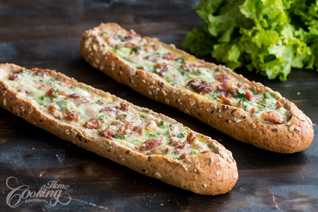

Egg Boats

I stumbled upon these kind of egg boats few time ago over Pinterest and I really loved this great idea for breakfast time. I kept the recipe simple using basic ingredients like bacon cheese and green onion but many variations can be made to this dish. Use different herbs, other type of cheese and meat to create each time a special breakfast.
I really enjoyed making them, really easy, quick and so appetizing. These egg boats are crispy on the outside, soft inside and are great served warm alongside some fresh salad.
Prep time=10 mins || Cook time=20 mins || Total time=30 mins
Ingredients
Makes about 2-3 servings
2 demi baguettes
4 eggs
2 tbsp (30g) heavy cream
3.5 oz (100g) bacon slices
1/2 cup (50g) Cheddar cheese
1/4 cup (25g) Parmesan cheese
2 spring onions, chopped
salt and freshly ground black pepper
Directions
Preheat oven to 350F (180C). Cut bacon slices into smaller pieces and cook to desired crispness. Set aside to cool. In a medium bowl, mix eggs, cream, cheese, bacon and onions. Season with salt and pepper. Cut a deep “V” through the top of the baguette and partially unstuff the baguette. Place the baguettes into a parchment paper lined baking sheet. Spoon the egg mixture into the prepared baguettes. Bake for 20-25 minutes until golden brown, and egg mixture is set. Allow to cool for about 5 minutes, cut and serve while still warm.
Nutrition facts
1 serving (139g) - Calories:403, Fat: 31.4g, Saturated Fat:13.8g, Unsaturated Fat:0.0g, Carbohydrates: 2.5g, Sugar:0.8g, Protein:27.4g, Cholesterol: 294mg, Calories from Fat 283, Sodium 1046mg, Potassium 319mg, Vitamin A 16%, Vitamin C 3%, Calcium 26%,Iron 10%, Nutrition Grade C, daily percent values are based on a 2000 calorie diet